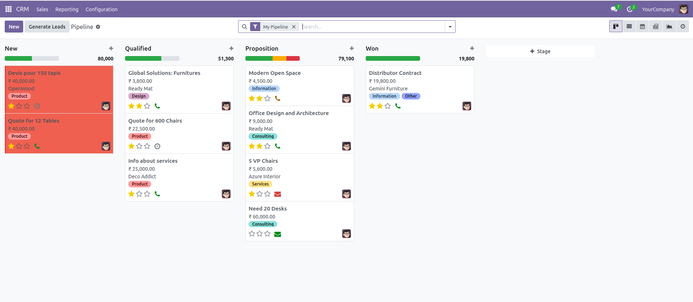
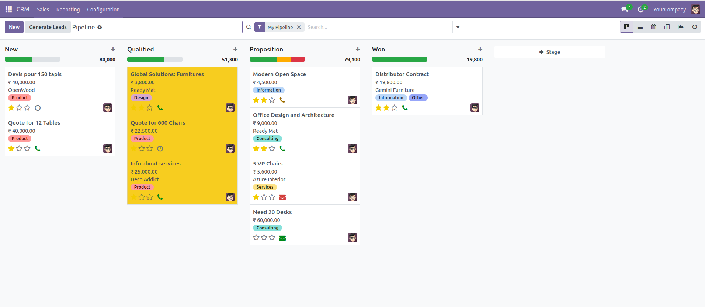
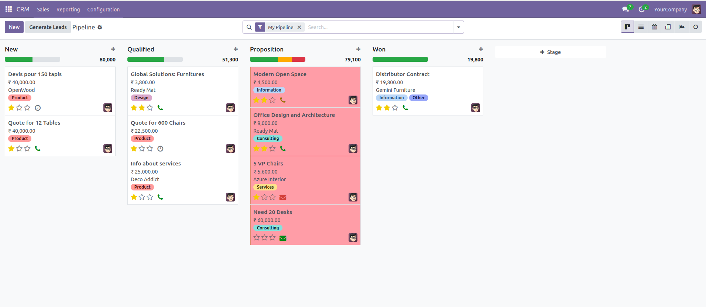
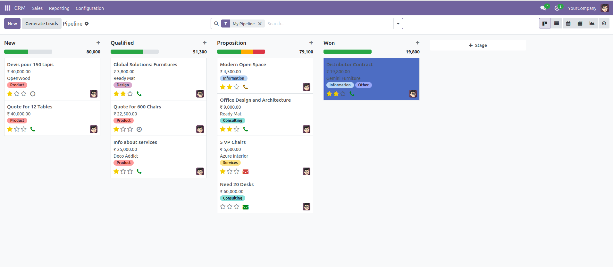
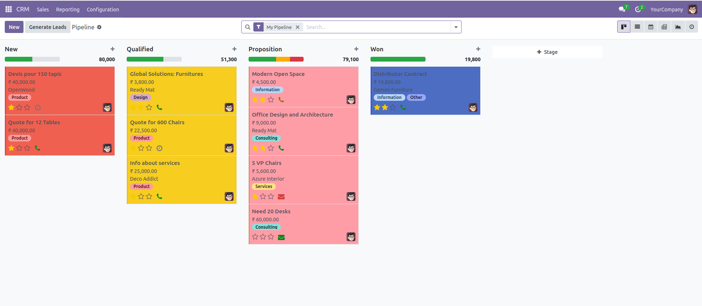

Inom CRM Stage Colors – Visual Pipeline Enhancement
Inom CRM Stage Colors is a powerful Odoo module designed to enhance the
CRM pipeline by allowing users to assign custom colors to CRM stages.
This improves visual clarity and makes it easier to identify opportunities
at different stages of the sales process.
With colored stages, sales teams can quickly understand deal progress
and manage opportunities more efficiently directly from the pipeline view.
Why Choose This Module?
Odoo’s default CRM pipeline shows stages with limited visual distinction.
Inom CRM Stage Colors improves the pipeline experience by enabling
custom colors for each stage, helping users instantly recognize the
status of deals and opportunities.
Key Features
-
Custom Stage Colors
Assign unique colors to CRM stages for better pipeline visibility.
-
Improved Pipeline Visualization
Opportunities become easier to track with clear stage colors.
-
Better Opportunity Tracking
Quickly identify new, qualified, proposal, and won opportunities.
-
User-Friendly Interface
Simple configuration directly within the CRM stage settings.
-
Seamless Odoo Integration
Works smoothly with the existing Odoo CRM pipeline without changing core functionality.
How It Works
1. Open the CRM module in Odoo.
2. Go to Configuration → Stages.
3. Select or create a CRM stage and assign a custom color.
4. The selected color will automatically appear in the CRM pipeline view.
Business Benefits
- Improves pipeline visibility
- Helps sales teams track opportunities faster
- Reduces confusion between different sales stages
- Provides a more modern and colorful CRM interface
Module Screenshots
Below are preview images showing the CRM pipeline with colored stages.

As you can see, when a lead is in the New stage, you can assign a specific color to it

When the lead moves to the Qualified stage, you can apply a different color.

Similarly, you can set another color for the Proposition stage

a separate color for the Won stage.As you can see below with these stage-based colors,
the overall dashboard becomes more organized and visually appealing.

You can select a color for each stage, and based on the selected stage color,
every card in the Kanban view will automatically update. This enhances the dashboard
appearance and makes the pipeline easier to visualize.
Support & Customization
For support, bug reports, or customization requests, please contact us:
Email:
info@inomerp.in